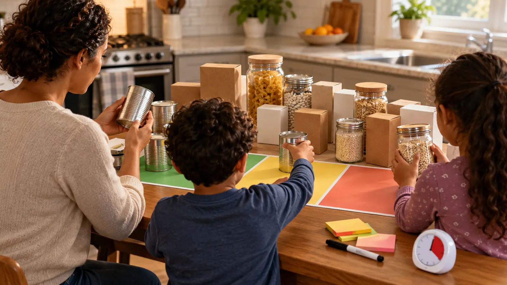

Keep
Package intact, storage directions followed, identity and date wording readable, no recall found when checked, and an adult has no safety concern. Return it with the soonest-planned item visible.
AT HOME · 25 MINUTES · NO-SPEND EXPLORATION
A date is one clue, not a dare. Kids can sort intact packages; an adult reads storage directions, handles damage, checks recalls, and makes every keep-or-discard call.

Most pantry dates are not a magic switch from safe to dangerous. USDA says product dating is generally not required by federal law except for infant formula, and FDA explains that a manufacturer’s “use by” date often concerns best flavor or quality rather than food safety. But a date never overrides bad storage, damaged packaging, a recall, mold, pests or an instruction to refrigerate.
The family job is not to prove old food safe. It is to make the pantry legible: read exact wording, inspect intact packages, group items that should be used soon, and hand every uncertain decision to an adult. Keep the activity to one shelf or twelve items. This is a school-night system, not a pantry demolition.
Read the words before the numbers. “Best if used by/before” generally points to best flavor or quality. A “sell by” date helps a store manage display. A “use by” date is the manufacturer’s recommendation for peak quality in most contexts, not automatically a federal safety deadline. Infant formula is the important exception: use it by the printed use-by date and follow every storage and preparation instruction.
Labels and laws can vary by product and jurisdiction. Meat, poultry and egg products may fall under USDA oversight; many other packaged foods fall under FDA oversight. Some states impose additional requirements. The package’s storage direction—such as “refrigerate after opening”—matters independently of the calendar date. Never generalize a shelf-stable rule to a refrigerated, prepared or home-canned food.
Choose one low shelf that contains ordinary commercially packaged shelf-stable food. Move cleaning products, medication, alcohol, knives, glass at risk of breakage and known allergens out of the work zone. Put three sheets of paper or towels on the table for keep, use soon and adult check. Add a marker, notepad and timer. Wash and dry hands.
The adult scans the shelf first. If there is a leak, sticky residue, bulging can, broken seal, pest evidence, sharp edge or spill, children stay back. The adult isolates the area and follows official cleanup or disposal guidance. Do not put a suspect container on the family sorting table for educational value.
FDA advises checking canned goods for swelling, leakage, punctures, holes, fractures, extensive deep rust or crushing/denting severe enough to prevent normal stacking or opening with a manual wheel-type opener. Stickiness can indicate a leak. Do not ask a child to press a bulging can, smell a leak or decide whether a seam dent is harmless.
For boxes, bags and jars, the adult checks for a broken seal, tear, hole, moisture stain, pest activity, loose lid, unexplained residue or evidence the package was opened and resealed. A damaged package can make the printed date irrelevant. Do not donate anything you would not serve under the same safety standard.
An opened package has a new clock and may have a separate instruction. Use the manufacturer’s after-opening direction and the family’s reliable opening date when relevant. If nobody knows when an item was opened or whether it was refrigerated as required, do not let a child vote it into the keep pile.
Food transferred to a container can lose the original lot code, ingredients, allergen statement, storage direction and date. Keep the original package information or a complete label according to the household’s system. Do not combine new food with old leftovers in the same container; it destroys traceability and can move contamination. For food allergies, the responsible adult controls dedicated storage and cross-contact precautions. The family food-allergy plan shows why labels and adult handoffs matter outside the house too.
A date check is a good moment to verify a suspicious item against the current official recall notice. Use FDA, USDA FSIS or the manufacturer’s official notice, matching the full product identity, size, lot or establishment information exactly. A similar brand name or date is not enough. Follow the notice’s return, discard or contact instruction; do not improvise a rinse or cooking fix.
Do not post a family pantry photo with readable lot codes, address labels or private notes. If contacting a company or regulator, an adult handles the report and preserves the requested package information safely. Children do not need to hear graphic illness stories to understand that an official recall overrides the game.
Move only food the adult has already approved. Choose a real use window: canned beans for Thursday dinner, pasta for the weekend, crackers for tomorrow’s supervised snack. Check ingredients and preparation directions when the meal is made. Nobody has to eat a disliked food because the household forgot it.
Keep the portion realistic. Opening five packages to reduce pantry clutter can create more waste. One item used completely is a better result. The recipe-scaling math lab can turn an approved shelf-stable ingredient into a separate measured activity, but it does not determine food safety.
Return food to a cool, dry location away from household chemicals. Keep heavier cans on a stable shelf children can access only as the family intends. Do not stack cans so high that they fall during the next check. Place use-soon items at eye level without covering the product identity, allergen information or date.
Do not use decorative bins so deep that food disappears, and do not decant for aesthetics if it removes critical information. A small open-front zone or simple label can be enough. If the shelf has moisture, pest activity, heat exposure or structural damage, stop the family activity and let an adult address the underlying problem.
Cost is $0 when you use three sheets of scrap paper, a marker, a notepad and a timer already available. Optional sticky notes are for a meal reminder, not a safety certification. No app, scanner or storage purchase is required. If a household lacks safe food storage or is dealing with food insecurity, this game is not the solution; use qualified local assistance and official food-safety resources.
After sorting, wash hands. Clean only the surfaces that need it with products used according to their labels, and keep cleaning chemicals away from food. Never mix cleaners. If a suspect package leaked, use official guidance appropriate to the substance and container rather than the ordinary three-minute reset.
Low energy: read five intact labels and make one use-soon meal note. Younger sibling present: the younger child matches colors on already cleared boxes while an adult keeps cans, glass and small caps out of reach. Reading differences: use a magnifier or phone accessibility feature on an intact label, but the adult verifies the wording. No safe work surface: skip the activity and make the meal plan from a written pantry list.
Skip the family version when there is a known recall, spill, pest problem, flood exposure, power-outage question, home-canned food uncertainty, active allergy risk, broken glass or a child who cannot follow the no-open/no-taste boundary. Handle those conditions with an adult and the relevant FDA, USDA, extension or health guidance. Also skip if sorting food could shame a family member; privacy and adequate food come before the lesson.
Reviewed October 27, 2026 using USDA Food Safety and Inspection Service Food Product Dating guidance and FDA’s Are You Storing Food Safely? guidance on dates, temperatures and damaged cans. The three-zone card and 25-minute lesson are original editorial tools, not an inspection, recall determination or individualized health advice. No affiliate links are attached. Report corrections through About.
MAKE THE WEEK COUNT
Build the plan your family can finish well, then leave enough energy for the next part of the day.
More family plans